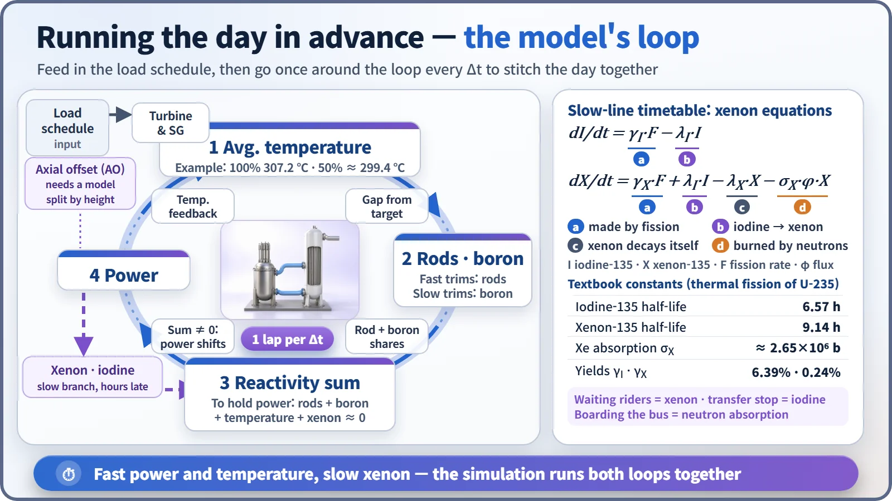
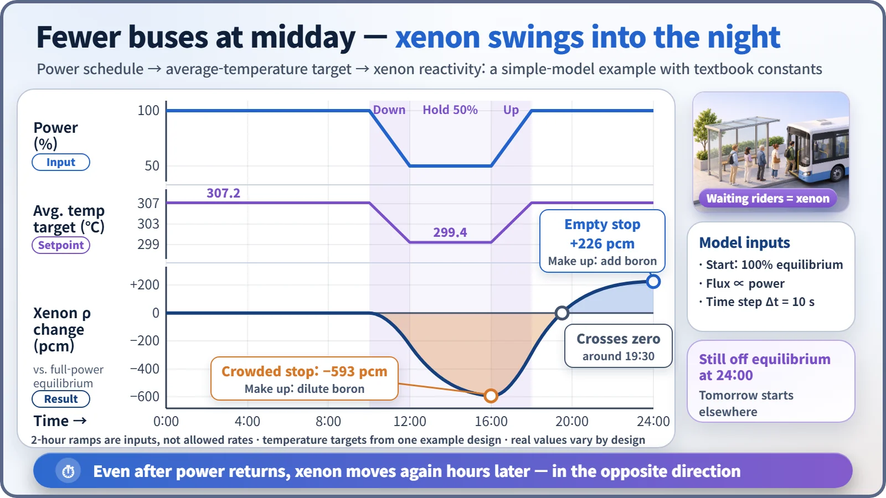

Modeling, Simulation & Computation · 273
The Bus Timetable That Drives the Day Ahead — Load Change Simulation at a Nuclear Plant
Lower power at midday and xenon keeps moving for hours, first stealing reactivity and then handing it back, which is why the day is calculated before it happens.
A load change simulation feeds a day's power schedule into linked equations and calculates, before the day happens, how temperature, control rods, boron and xenon will move. In a simple-model example where power drops to 50% at midday, xenon takes away about 590 pcm extra by 4 p.m. and then swings the other way, leaving about 230 pcm to spare by midnight. [2]
The bus timetable that drives the day ahead
Four in the morning, in a bus company's dispatch office, the scheduler is drawing up today's timetable: a bus every 3 minutes at rush hour, every 12 minutes at midday, then frequent service again in the evening. A seasoned scheduler doesn't just change the numbers. She runs the day in her head first: if buses thin out at midday, how many people pile up at each stop, and when service picks up again, how long until the lines clear?
Nuclear power plants have a dispatch office like that too: load change simulation.
When ridership changes, it's not just the buses that change
A load change simulation takes the day's electricity-demand plan as input and calculates in advance, with linked equations, how quantities inside the reactor move over time. "Load" is the electricity the plant has to deliver. Actually raising and lowering power is load-following operation; the simulation is trying that operation out inside a computer first, because when power changes, many things move at once, and at different speeds.

The model starts with the steam the turbine will take, which sets how much heat is drawn out of the primary coolant. Many pressurized water reactors define a load-dependent target for the coolant's average temperature; in one U.S. Nuclear Regulatory Commission training example it is 307.2 °C at 100% load and about 299.4 °C at 50%. [1] When the actual temperature strays from target, control rods move, and slower changes are handled by adjusting the boron dissolved in the coolant. Everything lands in one ledger, reactivity, which tells whether fission is trying to grow or shrink; 1 pcm is 0.001%.
Reactivity sum = rod share + boron share + temperature feedback share + xenon share ≈ 0
When the sum drifts from zero, power changes, and that in turn changes temperature and xenon. So the calculation goes around this loop every few seconds, stitching the day together lap by lap.
Riders piling up at the stop: xenon
The slowest and trickiest part of the loop is xenon-135, produced after fission and an extraordinarily strong neutron absorber. In the bus analogy, xenon is the crowd at the stop: lots of buses (neutrons) carry riders off quickly, and fewer buses let them pile up. Most riders also arrive hours later via a transfer station: fission first makes iodine-135, which decays with a half-life of about 6.6 hours into xenon, and xenon itself decays with a half-life of about 9.1 hours. The model writes this as two differential equations and updates iodine and xenon at every time step. [2]
| Textbook constant (U-235 thermal fission) | Value |
|---|---|
| Iodine-135 half-life | 6.57 h |
| Xenon-135 half-life | 9.14 h |
| Xenon absorption cross section | ≈ 2.65×10⁶ barns |
| Fission yields, iodine / xenon | 6.39% / 0.24% |
Now run a day with lots of midday solar power, so the nuclear plant's share shrinks: from 10 a.m., ramp down to 50% over two hours, hold until 4 p.m., then ramp back to 100% over two hours. Those two hours are only a calculation input, not an allowed rate; allowed rates differ by plant and fuel condition.

The result is dramatic. Once power drops, xenon builds up and keeps growing through the four hours at 50%, so by 4 p.m. it is taking about 590 pcm more reactivity than usual. Operators make that up by diluting boron or withdrawing rods; at roughly 10 pcm per ppm of boron, that is several tens of ppm of dilution. [3]
The twist comes after power goes back up. The line at the stop clears fast, and because fewer riders arrived from the transfer station during the day, the stop ends up emptier than usual. Xenon falls below equilibrium, leaving about 230 pcm of reactivity in the other direction around midnight, so now boron has to be added. Even when the day ends, xenon hasn't returned to where it started, and the next day begins from a different point.
Top-to-bottom balance can't be seen from a single point
The model also watches the axial offset (AO): the difference between top-half and bottom-half core power, divided by their sum. Rods inserted from the top push down the upper power, and xenon builds up differently at each height, so the balance tilts. AO must stay within a set range. A model that treats the whole core as a single point cannot see this tilt at all, so following load changes properly needs a model that slices the core by height, like adding a queue-length column for each stop to a timetable that only counted riders on the whole route.
What a day run in advance gives you
Load change simulation checks ahead of time when to dilute or add boron and by how much, how far the rods will go in, and whether the axial balance stays in range. The same calculations serve operator-training simulators and load-following assessments of new reactors.
It is distinct from load-following operation, which is the plant actually changing output, and from transient analysis, which looks at accidents and abrupt changes over seconds to minutes. Load change simulation follows slow changes over hours to more than a day within normal operation; even with a 10-second time step, a day is 8,640 steps.
A model is not a copy of the plant. Xenon constants and the strength of temperature feedback change as fuel burns and must be retuned every cycle, and real operation runs under instrument readings, operator monitoring and protection systems. Simulation does not stand in for safety; it tells you today what will happen tomorrow, and when.
Key takeaways
A load change simulation runs a loop of power, temperature, rods, boron and reactivity every time step, with xenon returning hours late on its own branch. Its biggest lesson is that xenon keeps swinging long after power is restored, which is why the plan for tomorrow is calculated today.